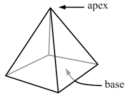
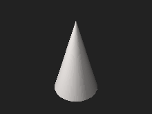

| Choisissez votre langue ! | Choose your language ! |
Un cône est défini (comme un cylindre) par une courbe fermée B enserrant une surface convexe supposée mesurable (la base) et par un point S (appelé sommet). Le cône est la surface formée par la famille des droites passant par S et un point de C (les génératrices).
Un tronc de cône est défini par deux plans parallèles au plan de la base, déterminant donc un volume C.
La pyramide est une section de cône à base carrée.

https://fr.wikipedia.org/wiki/Pyramide#/media/Fichier:Pyramid.svg
Le cône 'classique' est à base circulaire.
https://en.wikipedia.org/wiki/Cone#/media/File:Cono_3D.stl
Montrer que si h est la distance du sommet à la base le volume V du cône C délimité par le sommet et le plan de la base est donné par la formule V=hS/3 où S est la surface de la base.aide
Traitons le problème dans un repère orthonormé et supposons que le plan de la base est le plan Oxy, soit h la cote du sommet S S(a,b,h).
Le plan de cote t ∈ [0,h] est transformé du plan de cote 0 par l'homothétie de centre S et de rapport (h-t)/h
Cette application contracte les longueurs dans le rapport (h-t)/h, donc les surfaces dans le rapport ((h-t)/h)2.
solution
Le volume cherché est donc
\( \displaystyle \int_{0}^{h}S\left ( \frac{h-t}{h} \right )^{2}dt \)
\( \displaystyle =\frac{S}{h^{2}}\int_{0}^{h}\left ( h-t \right )^{2}dt \)
\( \displaystyle =\frac{S}{h^{2}}\int_{0}^{h}\left ( h^{2}-2ht+t^{2} \right )dt \)
\( \displaystyle =\frac{S}{h^{2}}\left [ h^{2}t-ht^{2}+\frac{t^{3}}{3} \right ] _{0}^{h} \)
\( \displaystyle =\frac{Sh}{3} \)
A cone is defined (like a cylinder) by a closed curve B enclosing a supposedly measurable convex surface (the directrix) and by a point S (called the apex). The cone is the surface formed by the family of straight lines passing through S and a point of C (the generatrixes or generatrices).
A truncated cone is defined by two planes parallel to the plane of the base, thus determining a volume C.
The pyramid is a cone section with a square directrix.
https://fr.wikipedia.org/wiki/Pyramide#/media/Fichier:Pyramid.svg
The 'classic' cone has a circular base.https://en.wikipedia.org/wiki/Cone#/media/File:Cono_3D.stl
Show that if h is the distance from the top to the base, the volume V of the cone C bounded by the apex and the plane of the directrix is given by the formula V=hS/3 where S is the surface of the base.hint
Let's deal with the problem in a three-dimensional rectangular coordinate system and suppose that the base plane is the Oxy plane, let h be the applicate of the apex S S(a,b,h).
The horizontal plan with applicate t ∈ [0,h] is transformed from the horizontal plane of applicate 0 by the dilation with center S and ratio (h-t)/h
This application contracts lengths in the ratio (h-t)/h, so areas in the ratio ((h-t)/h)2.
solution
So the volume we want is
\( \displaystyle \int_{0}^{h}S\left ( \frac{h-t}{h} \right )^{2}dt \)
\( \displaystyle =\frac{S}{h^{2}}\int_{0}^{h}\left ( h-t \right )^{2}dt \)
\( \displaystyle =\frac{S}{h^{2}}\int_{0}^{h}\left ( h^{2}-2ht+t^{2} \right )dt \)
\( \displaystyle =\frac{S}{h^{2}}\left [ h^{2}t-ht^{2}+\frac{t^{3}}{3} \right ] _{0}^{h} \)
\( \displaystyle =\frac{Sh}{3} \)
|
Création Gilles Dubois - licence CC-BY-SA
Created by Gilles Dubois - licence CC-BY-SA
|
Septembre 2023
September 2023
|
Version mobile Jquery
Mobile Jquery version
|
|